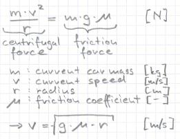

3.1 Basic Utility FunctionsIntroductionAh, it's you. Welcome back. The boring "administrative" stuff is over, now we start to bang out the most out of our car. This chapter will introduce you in braking and gear changing. We will still drive on the middle of the track, so don't expect exciting lap times. But what braking concerns, you will implement in this chapter all "secrets" from my berniw robot. But before we start let's record some lap times of our current implementation with the cg-nascar-rwd car:
In the "Basic" sections of this chapter I will introduce you into driving without considering aerodynamics, anti wheel locking and traction control. In the "Advanced" sections we will add this features. First we start with developing some useful utility functions. About Speed Limits

Of course, all speed junkies get now sick because of the section title. But keep in mind, if you
want to race, use TORCS or go to the race track, please don't use public roads. But that's not
the subject, I want to discuss the physical speed limits... |
|
/* Compute the allowed speed on a segment */
float Driver::getAllowedSpeed(tTrackSeg *segment)
{
if (segment->type == TR_STR) {
return FLT_MAX;
} else {
float mu = segment->surface->kFriction;
return sqrt(mu*G*segment->radius);
}
}
The function gets a pointer to the segment in question. If it's a straight segment there is no limit, else we compute the limit according to the above formula. You can improve the function e. g. with taking into account the center of gravity of the car. DistanceFor braking we need also to know distances. Here is a function that computes the distance of the car to the end of the current segment (remember the track segments or look up chapter 1.3). I put this into a function, because car->_trkPos.toStart contains depending on the segment type the arc or the length, so we need to convert it sometimes to the length (arc times radius = length).
/* Compute the length to the end of the segment */
float Driver::getDistToSegEnd(tCarElt* car)
{
if (car->_trkPos.seg->type == TR_STR) {
return car->_trkPos.seg->length - car->_trkPos.toStart;
} else {
return (car->_trkPos.seg->arc - car->_trkPos.toStart)*car->_trkPos.seg->radius;
}
}
AcceleratorWe need also to know for a given speed how much accelerator pedal we have to apply. If we tell TORCS to accelerate 100% (1.0), it tries to run the engine at the maximum allowed rpm (car->_enginerpmRedLine). We can compute the angular speed of the wheel with the speed and the wheel radius. This has to be equal like the desired rpm divided by the gear ratio. So we finally end up with an equation for the desired rpm, the pedal value is then rpm/enginerpmRedLine. If the given speed is much higher than the current speed, we will accelerate full.
/* Compute fitting acceleration */
float Driver::getAccel(tCarElt* car)
{
float allowedspeed = getAllowedSpeed(car->_trkPos.seg);
float gr = car->_gearRatio[car->_gear + car->_gearOffset];
float rm = car->_enginerpmRedLine;
if (allowedspeed > car->_speed_x + FULL_ACCEL_MARGIN) {
return 1.0;
} else {
return allowedspeed/car->_wheelRadius(REAR_RGT)*gr /rm;
}
}
Finishing ImplementationWe have to define the constants G and FULL_ACCEL_MARGIN in driver.cpp
const float Driver::G = 9.81; /* [m/(s*s)] */ const float Driver::FULL_ACCEL_MARGIN = 1.0; /* [m/s] */ and in driver.h. static const float G; static const float FULL_ACCEL_MARGIN; Put also the above method interfaces into driver.h. float getAllowedSpeed(tTrackSeg *segment); float getAccel(tCarElt* car); float getDistToSegEnd(tCarElt* car); Summary
|
|
Back |
Now let's apply brakes. |